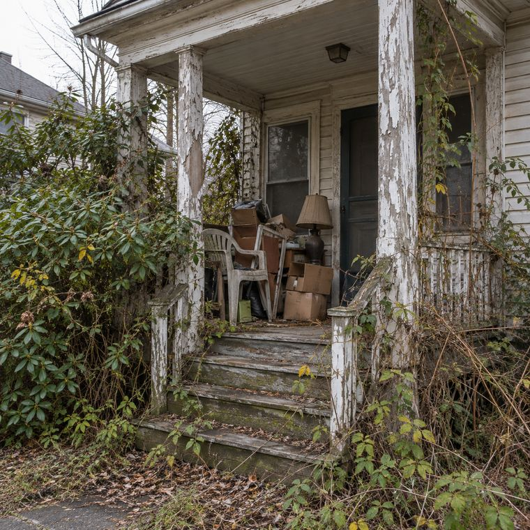
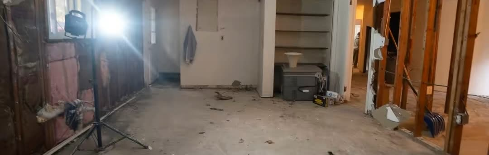
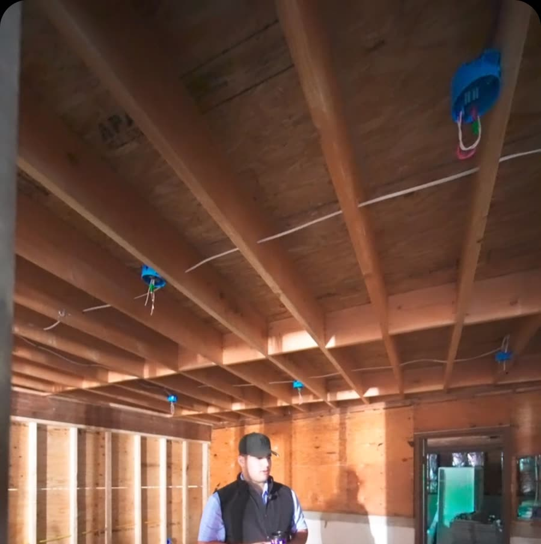

Cash home buyer · North Jersey
I buy the houses most people walk away from.
Hoarder houses. Inherited homes. Fire, water, mold, termites. Sell your house exactly as it is, for cash, on your timeline.
- No repairs
- No clean-out
- No fees
Don't fix it.
Roof, siding, foundation, mold, termites, fire or water damage. You don't spend a dollar on repairs. I buy the house the way it stands today.
Don't clean it out.
Leave the furniture, the boxes, the bags, whatever is in the attic and the basement. Take what matters to you and close the door. The rest is my job.
No agents. No showings.
All of this work is on my dime, not yours. No realtor commission, no strangers walking through your house, no home inspection to pass. Just a cash offer, straight from the person buying the house.
How it works
Three steps. That's it.
Tell me about the house
Text or DM me the town and what's going on with it.
Get a cash offer
Free, with no obligation. If the number works for you, we move forward.
Close when you're ready
Fast if you need it, later if you need time. We set the date around you.
You walk away with cash. I take it from here.
Get your cash offerAny condition
Does your house look like this?
Then let's talk. That's exactly the kind of house I buy.




AI-generated images of the kind of house I buy, not photos of real houses. Most buyers see a problem. I see a house I can work with.
- Hoarder houses
- Inherited homes
- Estate sales
- Vacant houses
- Fire damage
- Water damage
- Mold
- Termites
- Foundation issues
- Years of wear and tear
Before & after
Then I bring them back.
Everyone sees the finished home. Very few see what happens before the drywall goes up. Drag the line: these are real houses from my own projects, photographed before and after.
 BeforeAfter
BeforeAfter
 BeforeAfter
BeforeAfter

 BeforeAfter
BeforeAfter

 BeforeAfter
BeforeAfter

 BeforeAfter
BeforeAfter
Straight from me
Here's the deal, in 23 seconds.
In my own words. Watch it or read it below.
Read the transcript
“Are you on the market to sell your home, but you're worried about repairs, cleaning out, showings, realtors, paying commission and all that? No, no, no. Let's not do that. Let's connect with each other. I can pay you cash, worry free. You don't have to go through inspections, and then we can make it happen fast. Cash, as-is offers. Shoot me a text or DM me.”
“Cash, as-is offers. Shoot me a text or DM me.”
Text me about your house



Who's buying
I'm Luca.
I buy houses across North Jersey. If you're stuck with a house that's more work than you want to deal with, or an inherited home still full of a lifetime of belongings, that's where I come in.
You talk to me directly. Not a call center, not a middleman.
I renovate with my team: demolition, electrical, plumbing, HVAC, windows, floors, kitchens, bathrooms. That's why the condition of your house doesn't scare me.
Questions
Straight answers.
Do I have to clean out the house first?
No. Leave anything you don't want to keep: furniture, boxes, trash, the stuff in the attic. Take what matters to you and I'll take care of the rest.
Do I need to make any repairs?
No. I buy the house as-is. Mold, termites, fire or water damage, foundation issues, a roof that leaks: you don't fix anything.
Are there fees or commissions?
No. There's no realtor, so there's no commission, and I don't charge any fees. Anything already owed on the house, like a mortgage or back taxes, plus New Jersey's transfer fee, gets settled at closing, the same as in any sale.
Will there be showings or inspections?
No showings, and no home inspection to pass. If I need to see the house, it's just me. If your town requires a certificate for the sale, like New Jersey's smoke alarm check, I'll tell you up front.
How fast can we close?
On your timeline. We can make it happen fast if you're in a hurry, or take our time if you need to sort things out first. The one thing that can slow us down is legal paperwork, like a lien or estate papers on an inherited house.
Is the offer free?
Yes. The cash offer is free and you're under no obligation to accept it.
Where do you buy?
New Jersey, mostly North Jersey. Send me the town and a few details, and I'll let you know.